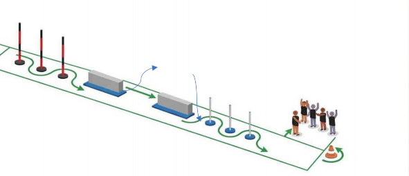
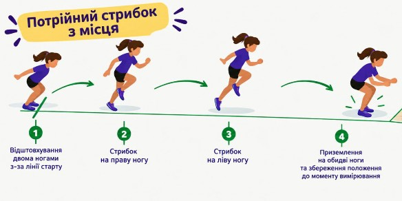
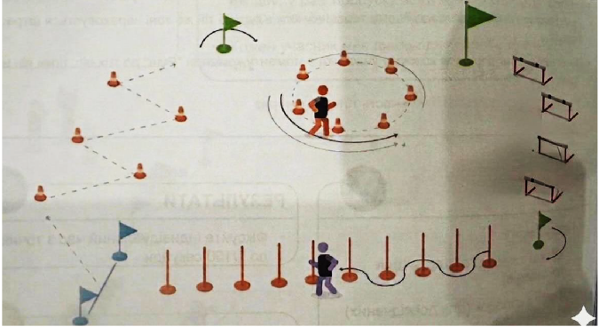
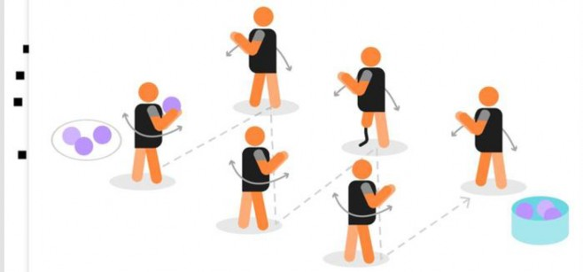
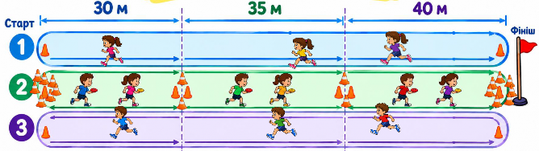

Цей Регламент визначає порядок проведення фізкультурно-оздоровчого заходу:
«Kids athletics OCTOBER FEST: Фестиваль дитячої легкої атлетики » (далі – Захід).
Основною метою Заходу є популяризація оздоровчої рухової активності як основного чинника формування сталої звички ведення здорового способу життя серед учнів молодшого шкільного та дітей дошкільного віку через підготовку та проведення Заходів з легкої атлетики.
Основні завдання Заходу:
розвиток та популяризація дитячої легкої атлетики в Дніпропетровській області;
залучення максимальної кількості дітей до регулярних занять фізичною
культурою та спортом, зокрема легкою атлетикою;
формування у молоді сталих традицій і мотивації щодо фізичного виховання і спорту як важливого чинника у забезпеченні здорового
способу життя;
залучення талановитих дітей та підлітків для занять легкою атлетикою у закладах спеціалізованої позашкільної освіти спортивного профілю та
інших закладів фізичної культури та спорту;
покращення спортивного іміджу Дніпропетровської області та м. Дніпро.
Захід проводиться 11 жовтня 2026 року у місцях визначених Федерацією легкої атлетики Дніпропетровської області (ФЛАДнО).
Загальне керівництво, організація та проведення Заходу в м. Дніпро здійснюється Федерацією легкої атлетики Дніпропетровської області, Громадської організації Kids athletics Dnipro, Kids Fitness та Управлінням спорту департаменту гуманітарної політики Дніпровської міської ради.
Контактні данні kids.athletics.dn@gmail.com. 0937942393, 0973670219.
Для участі у заході необхідно до 05 жовтня 2026 заповнити реєстраційну форму та здійснити оплату стартових внесків, які становлять 400 (виставкові) 500 (командні) гривень з кожної дитини. Реєстрація може завершитись раніше, якщо загальна кількість зареєстрованих учасників становитиме 200 чоловік.
Реєструючись на участь у фестивалі учасники і їх представники автоматично і добровільно (без примусу) надають свою згоду:
На фото, відео зйомку учасників і гостей фестивалю;
На публікацію зображень, що були створені внаслідок такої зйомки, у соціальних мережах (Facebook, Instagram, TikTok, YouTube тощо) та інших медіа-платформах;.
Згода надається безстроково.
Учасниками заходу є тренери, вихованці спортивних клубів та громадських організацій, а також усі охочі діти 2014-2023 року народження у супроводі відповідальної особи.
Програма змагань охоплює дві секції: командні та виставкові (особисті) виступи.
Вікові категорії
Командна першість:
Склад команди 6 учасників віком:
2 дітей 2015-2016 року народження (без урахування статті); 2 дітей 2017-2018 року народження (без урахування статті); 2 дітей 2019-2020 року народження (без урахування статті).
Виставкові забіги: організовуються з метою створення спортивної події відкритої і доступної для всіх дітей відповідної вікової категорії (2014-2023 року народження), які не змогли прийняти участь у командній першості.
Програма заходів складається з таких видів програми
Естафета - «Змішана»;
Стрибки - «Потрійний з місця»;
Естафета - «Квадрат спритності»;
Метання - «Зигзаг»;
Метання «Вортексу».
Гонка «Супер-перегони» 3хв.
В загальному заліку перемагає команда, яка набрала меншу кількість балів, за всі види програм. При рівній кількості балів, перевага надається тій команді, яка найбільше зайняла перших місць.
Діти з інвалідністю біг по прямій 60м; 2022 -2023 біг по прямій 60м;
2020 – 2021 біг 100 м (50м гладкий біг, 50м з подоланням перешкод маленьких бар’єрів 15см 3шт) ;
2018-2019 біг 150м. (100м гладкий біг, 50м з подоланням перешкод вертикальних стовпів, бар’єрів 30 см 4шт відстань між ними 6м);
2016-2017 біг 200м. (150м гладкий біг, 50м з подоланням перешкод вертикальних стовпів, бар’єрів 30 см 4шт відстань між ними 6м);
2014-2015 біг 200м. (150м гладкий біг, 50м з подоланням перешкод вертикальних стовпів, бар’єрів 30 см 4шт відстань між ними 6м).
Учасники Заходів виставкових забігів отримують медалі за участь, сертифікат з фіксованим часом подолання дистанції та призи, від спонсорів і стартових внесків за участю, допомогою та у співпраці з Федерацією легкої атлетики Дніпропетровської області, Громадської організації Kids athletics Dnipro, Kids Fitness та Управлінням спорту департаменту гуманітарної політики Дніпровської міської ради.
Призери командної першості 1-3 місце отримують дипломи, кубок визначеного місця, а також разом з іншими учасниками командної першості отримують медалі за участь, та призи, від спонсорів і стартових внесків.
Фінансові витрати покриваються організаторами, спонсорами та за рахунок стартових внесків.
Матеріально – технічне забезпечення здійснюється організаторами заходу, Федерацією легкої атлетики Дніпропетровської області, Громадської організації Kids athletics Dnipro, Kids Fitness та Управлінням спорту Дніпра.
Підготовка місць проведення Заходів здійснюється відповідно до постанови Кабінету Міністрів України від 18 грудня 1998 року № 2025 "Про порядок підготовки спортивних споруд та інших спеціально відведених місць для проведення масових спортивних та культурно-видовищних заходів" та з дотриманням вимог безпеки, які передбачені законодавством про воєнний стан: Указ Президента України від 24 лютого 2022 року № 64/2022 "Про введення воєнного стану в Україні" (зі змінами).
Під час організації та проведення Заходів відповідальний за його проведення забезпечує учасників Заходів інформацією про найближче укриття, до якого необхідно слідувати під час повітряної тривоги. У разі оголошення повітряної тривоги в регіоні, в якому проводиться Заходи, відповідальний за безпеку проведення Заходів приймає рішення щодо евакуації всіх учасників в укриття або споруду, яка може використовуватися як укриття та знаходитися на відстані не більше ніж 500 м від спортивної споруди, де проводяться Заходи.
Додаток
Короткий опис: змішаної естафети

Учасники команд пробігають пряму з перешкодами та спринт без перешкод у вигляді естафети. Всі члени команди виконують обидва завдання. Перший учасник проходить першу палицю з правої сторони, пробігає через слалом, перестрибує
«ножицями» першу перешкоду (з правої сторони на ліву), біжить 5 м на цій стороні, перестрибує «ножицями» другу перешкоду (зліва направо), пробігає через другий слалом та проходить наступну палицю, біжучи до членів своєї команди. Після передачі естафети другий учасник повертається спринтом назад по рівній доріжці до старту. Третій учасник проходить ділянку з перешкодами і так далі.
Від ліні старту до вертикальної палки 6 м, між ними 1м, від 3 вертикальної палки до перешкоди 4,5 м, між перешкодами 5м, до фінішної прямої 6м.
У разі фальш-старту за допомогою свистка покличте бігунів та виконайте повторний старт. Дискваліфікація при цьому не застосовується, але нагадайте бігунам про необхідність зачекати на команду «Руш!».
Штраф на падіння естафетної палиці відсутній, але бігун, який упустив палицю, повинен підняти її.
Не кидайте естафетну палицю під час передачі. Інакше до командного часу буде нараховано 3 штрафні секунди.
Якщо перешкоду перекинуто, штрафи не застосовуються, але організаційна група повинна поставити/вирівняти перешкоди після кожного гравця.
Якщо бігун збиває палицю для слалому, до командного часу додається 1 штрафна секунда, при цьому організаційна група повинна встановити її якомога швидше.
Підрахунок очок.
Рейтинг оцінюється за часом: перемагає команда з найкращим часом. Наступні команди розташовуються в рейтингу відповідно до свого фінішного часу.
Суддя-стартер
Хронометрист
Секретар (для фіксації командного результату/часу)

Учасник виконує потрійний стрибок з місця. Стрибок виконується з-за лінії старту у напрямку вперед. Відштовхуються двома ногами, далі послідовно стрибають з однієї ноги на іншу: права — ліва — (або ліва- права). Після виконання 2х стрибків з ноги на ногу учасник приземляється на обидві ноги та зберігає положення до
моменту вимірювання результату.
Результат вимірюється від лінії відштовхування до найближчого сліду, залишеного учасником після приземлення. Кожному учаснику надається одна спроба.
Якщо учасник заступив за лінію відштовхування під час виконання стрибка, спроба не зараховується.
Якщо учасник під час виконання стрибка змінив послідовність ніг або виконав додаткове відштовхування, спроба не зараховується.
Якщо учасник після приземлення відступив назад, результат вимірюється за найближчим до лінії відштовхування слідом.
Якщо учасник упав назад після приземлення, результат визначається за найближчим слідом від лінії відштовхування.
Результат оцінюється за дальністю стрибка у загальній сумі кожного учасника: перемагає команда, яка показала найбільшу відстань. Наступні учасники розташовуються в рейтингу відповідно до свого результату.
Суддя
Суддя-вимірювач
Секретар (для фіксації результатів)
Короткий опис: естафета як поєднання бігу зиг-загом, бігу по віражу бар'єрного та слаломного спринту.

Процедура.
Дистанція має довжину приблизно 45-60 метрів і поділена на одну зону для бігу зиг-загом (торкаючись руками до конусів у кількості 4 шт), для бігу по колу (приблизний діаметр 5-7 м.) імітуючи короткий віраж (пробігти повне коло, на другому колі продовжити рух в сторону прапорця і бар’єрів), для бігу через бар’єри (3 шт, відстань між ними 5.5-6 м) та для бігу навколо слаломних палиць 10 шт. (див. малюнок). В якості естафетної палички використовується м'яке кільце.
««Квадрат спритності»» - це командна гонка, в якій кожен учасник команди повинен пройти повне коло перешкод.
не подолання перешкоди;
неправильна передача/прийом естафетного кільця;
Не повне пробігання по сектору коло.
За кожен помилку додається 2 секунди до загального часу команди.
Рейтинг оцінюється за часом: перемагає команда з найкращим часом. Наступні команди розташовуються в рейтингу відповідно до свого фінішного часу.
Не менше двох асистентів для правильного налаштування обладнання.
Окрім обслуговуючого персоналу команди, потрібні ще два помічники, які будуть виконувати функції суддів зон передачі. Одна людина повинна бути стартером.
Процедура метання вортексу проводиться на спеціальному майданчику (секторі) для метань, який представляє собою зону для розбігу шириною 1,5-2 метри і довжиною 3-4 метри, яка обмежена лінією фолу, та зону для метання (приземлення) шириною не менше 10 метрів і довжиною не менше 16 метрів. Відстань від лінії фолу в зоні для приземлення має бути розмічена з інтервалом у 20 см. Після короткого розбігу в межах зони для розбігу учасник кидає снаряд від лінії фолу у зону для метання (приземлення). Спроба вважається невдалою, якщо під час її виконання учасник перетнув лінію фолу до моменту приземлення снаряду в зоні для приземлення або якщо снаряд приземлився по за боковими межами зони приземлення. Кожен учасник отримує дві спроби. Кидок виконується однією рукою, утримуючи снаряд у хваті пальцями та долонею, з короткого розбігу, з кроку або з місця.
Примітка щодо безпеки. Оскільки під час змагань з метання вортексу безпека для дітей має вирішальне значення, лише помічникам (суддям) дозволяється перебувати в зоні для метання (приземлення). Суворо заборонено кидати вортекс назад до лінії фолу.
зони приземлення але в межах проекцій її бокових обмежувальних ліній, спроба вважається вдалою і учасник, який виконував кидок, отримує за цю спробу максимальний бал (за умови що всі інші правила виконання кидка були дотримані).

робить передачу по діагоналі гравцю 2 (лінія Б), який робить передачу гравцю 3 (лінія A) і так далі. Останній гравець кладе м’яч у визначене місце. Після чого перший учасник знов починає передачу. Загальна кількість м’ячів складає 6 шт. Якщо під час виконання передачі м’яча, любий учасник загубив його, право на підняття і продовження гри має лише перший учасник. Який в свою чергу після підняття м’яча має повернутися на свою позицію та почати цю передачу заново!
Суддя-стартер
Хронометрист
Секретар (для фіксації командного результату/часу)
Короткий опис: 3х біг по секторах 60-80 м.

Кожна команда має пробігти якомога більше човникових відрізків довжиною від 30 м до 40 м в залежності від вікової категорії в своїй команді (див. малюнок вище) протягом 3 хвилин переносячи предмети з початку свого сектора в кінець. Декілька команд може стартувати одночасно, на кожну команду виділено 3 доріжки. Всі учасники команди стартують за сигналом і біжать виключно кожний лише в своєму секторі від молодших дітей до старших. Команда старту подається всім командам і учасникам одночасно звуковим сигналом. На початку забігу в кожному секторі вже лежать по 4 предмети, які учасники починають переносити в кінець своєї дистанції після стартового сигналу. Поклавши їх в кінці свого сектору виконують розворот (один учасник постійно виконує розворот лише праворуч інший лише ліворуч) і біжать по вільним доріжкам за наступною фішкою, таким чином наповнюють запасом предметів наступний сектор. Цикл продовжується протягом 3 хв. Останній сектор є ключовим, бо від кількості зібраних фішок в кінці дистанції і залежить фінішний результат команди! Через 3 хвилини завершення бігу позначається фінальним сигналом. На змагальній дистанції протягом 3 хвилин, учасникам дозволяється виконувати обгін в необмеженій кількості в межах свого сектору.
Після закінчення бігу зібрані предмети в кінці останнього сектору рахуються асистентами, які контролювали процес фіксації предметів і записують результат. Враховуються лише завершені відрізки.
Для ефективної організації заходу необхідні не менше трьох помічників на команду. Вони відповідають за визначення стартової лінії, старт, сигнали, контроль відліку часу, а також за роздачу, збір і підрахунок предметів. Повинні записати бали в картку події.